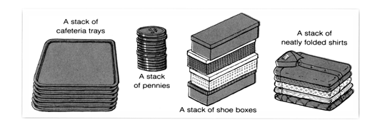

2.2 Stack
- Stack is an ordered group of homogeneous items of elements.
- Elements are added to and removed from one end called the top of the stack.
- Most recently added item will be at the top of the stack and hence it will be removed first.
- That is the last element to be added is the first to be removed. So stack is said to follow the queue discipline LIFO: Last In, First Out.

2.2.1 Operation on Stack
Push and Pop are main operations of stack and other operations can be created based on need.
- Push - Inserting an Element in to stack.
- Pop - Removing an element from top of stack.
- ViewTop - View the top element in the stack.
- ViewStack - Content of Stack can be displayed.
- MakeEmpty - All elements in Stack are entirely removed.
- IsEmpty - Returns true if the stack has no elements.
- IsFull - Returns true if element can not be pushed into stack.
2.2.2 Applications of Stack
- Expression Conversion
- Infix to Postfix
- Infix to Prefix
- Postfix to Infix
- Prefix to Infix
- Postfix Expression Evaluation
- Balanced Parenthesis Checking
- Parsing
- Recursive Function
- Function Calling
2.2.3 Implementation of Stack
Array
Gives best performance but has size limitation
Vector
Identical to array version
Can only grow but can’t shrink
Linked List
No size restriction but slower compared to other methods.
#define EmptyTOS -1 // when stack is empty , array index will be -1
struct StackRecord;
typedef struct StackRecord *Stack;
struct StackRecord
{
int Capacity; // keeps the maximum size of array
int TopOfStack; //always points to top element
int *Array;
};